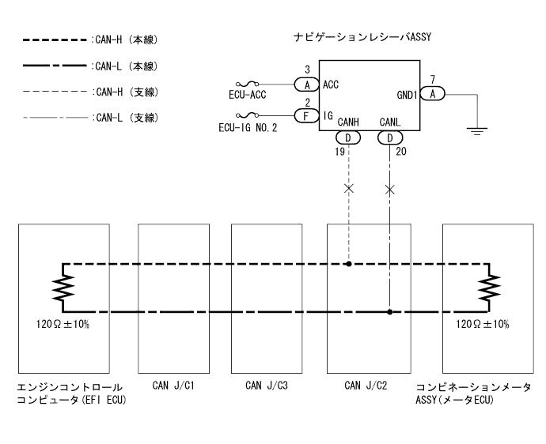
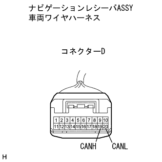
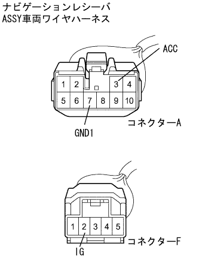

CAN Communication System Navigation ECU Communication Stop Mode |
| Diagnosis Item | Symptom | Suspected Area |
|---|---|---|
| Navigation ECU Communication Stop Mode |
|
|

| Step 1 | CAN Bus Open Circuit Inspection (Navigation ECU Branch Line) |
 |
With the IG OFF, disconnect vehicle wire harness connector D of the navigation receiver assembly.
Using SST (Toyota electrical tester), check the resistance between the terminals.
| Tester Connection (Terminal Symbol) | Condition | Standard |
|---|---|---|
| D19(CANH) - D20(CANL) | IG OFF (Communication Stopped) | 54 to 69Ω |
|
| ||||
| OK | |
| Step 2 | Inspect Wire Harness and Connector (ECU Power Source Circuit) |
With the IG OFF, disconnect connectors A and F of the navigation receiver assembly.
 |
Using SST (Toyota electrical tester), check the resistance between the terminals.
| Tester Connection (Terminal Symbol) | Condition | Standard |
|---|---|---|
| A7 (GND1) - Body ground | Always | Below 1 Ω |
| Tester Connection (Terminal Symbol) | Condition | Standard |
|---|---|---|
| A3 (ACC) - Body ground | ACC ON | 11 to 14V |
| F2 (IG) - Body ground | IG ON | 11 to 14V |
|
| ||||
| OK | ||
| ||